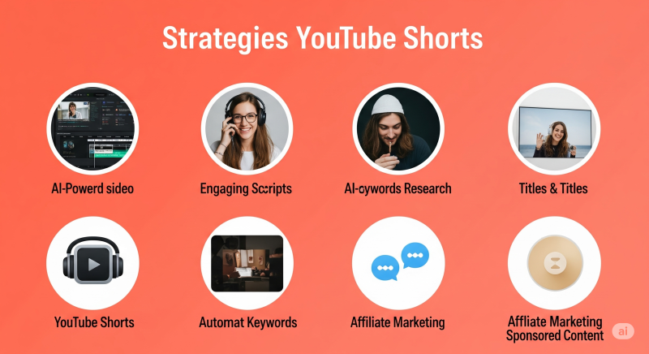

최근 유튜브 쇼츠에서 수백만, 때로는 수천만 뷰를 기록하며 빠르게 성장하는 채널들이 있습니다. 언뜻 보기에는 제작이 매우 어려워 보이지만, 사실 이 영상들 중 상당수는 AI 도구를 활용하여 비교적 간단하게 만들어지고 있습니다. 심지어 어떤 채널은 월 약 3만 달러(한화 약 4천만 원)에 달하는 수익을 올리고 있다고 합니다!
이 틈새시장은 아직 포화되지 않았는데, 많은 사람들이 "제작이 너무 어렵다"고 생각하기 때문입니다. 하지만 이 글을 끝까지 읽으시면, 여러분도 AI를 활용하여 얼굴 없는 유튜브 쇼츠 채널을 만들고 수익을 창출하는 구체적인 4단계 전략을 모두 알게 될 것입니다. 초보자도 쉽게 따라 할 수 있도록 단계별로 상세히 안내해 드립니다.
이 글의 목차
1단계: 바이럴 가능성이 높은 주제 선정 (Pick a Viral Topic)
성공적인 유튜브 채널의 시작은 매력적인 주제 선정에서 비롯됩니다. 단순히 무작위로 주제를 정하는 대신, 이미 수많은 조회수를 기록하며 성공한 영상들의 데이터를 활용하는 것이 핵심입니다. 이를 위해 우리는 ChatGPT (chat.openai.com)를 우리의 똑똑한 주제 생성기 및 스크립트 작가로 훈련시킬 것입니다.
1.1. 성공 사례 분석 및 ChatGPT 훈련
가장 먼저 할 일은 여러분이 만들고 싶은 콘텐츠와 유사한 주제로 이미 여러 바이럴 영상을 보유한 유튜브 채널을 찾는 것입니다. (예시 영상에서는 'Geoglob Tales'라는 채널을 언급했습니다.)
- 성공적인 채널을 찾았다면, 해당 채널의 인기 동영상 중 하나의 URL을 복사합니다.
- 다음으로, 영상 스크립트를 추출할 수 있는 도구를 사용합니다. 영상에서는 Tactic이라는 웹사이트를 언급했지만, 해당 서비스의 현재 상태나 접근성을 확인해야 합니다. (대안으로는 유튜브 자체 자막 기능을 활용하거나, youtubetranscript.com과 같은 온라인 스크립트 추출 도구를 사용할 수 있습니다.) 추출된 스크립트를 복사합니다.
- ChatGPT에 접속하여, 복사한 스크립트와 함께 다음과 같은 프롬프트를 입력합니다:
"다음은 특정 유튜브 영상의 스크립트입니다: [여기에 스크립트 붙여넣기]. 이 영상의 틈새시장(niche), 주제 유형, 스크립트 작성 스타일을 심층적으로 분석해주세요. 또한, 이 스크립트의 강점과 개선할 수 있는 점에 대한 상세한 설명을 제공해주세요."
ChatGPT는 제공된 스크립트를 분석하여 영상의 특징, 강점, 개선점 등에 대한 포괄적인 피드백을 제공할 것입니다. 이 과정을 통해 ChatGPT는 어떤 요소가 바이럴 영상을 만드는지 학습하게 됩니다.
1.2. 타겟 시청자 및 주제 구체화 (미국 중심 전략)
ChatGPT가 성공적인 영상의 특징을 이해했다면, 이제 특정 주제에 대한 아이디어를 요청할 차례입니다. 영상에서는 특히 '미국 관련 주제'를 다루는 것이 높은 RPM(1,000회 조회당 수익)을 얻는 데 유리하다고 강조합니다. 미국 시청자를 많이 유입시키면 더 많은 광고 수익을 기대할 수 있기 때문입니다.
ChatGPT에게 다음과 같이 요청하여 주제 아이디어를 얻습니다:
"이전에 제공한 피드백을 바탕으로, 이제 당신은 나의 유튜브 쇼츠 스크립트 작가 역할을 수행합니다. '미국 주(US states)에 대한 흥미로운 사실들'이라는 주제로 영상을 제작하려고 합니다. 유튜브 쇼츠용으로 만들 만한 3~5가지 흥미로운 사실 목록을 제안해주세요."
ChatGPT는 미국 주들에 대한 여러 가지 사실을 제시할 것입니다. 이 중에서 2~3가지의 가장 흥미롭거나 독특한 사실을 선택합니다. (예: 애리조나는 일광 절약 시간제를 사용하지 않는다, 알래스카는 텍사스의 두 배 크기다 등)
참고: 유튜브 쇼츠로 수익을 창출하려면 유튜브 파트너 프로그램(YPP) 가입 조건을 충족해야 합니다 (일반적으로 구독자 1,000명 및 최근 90일간 쇼츠 조회수 1,000만 회). 이 조건을 빠르게 달성하기 위해, 일부 채널 운영자들은 이미 수익 창출 조건이 갖춰진 계정(pre-monetized accounts)을 구매하여 첫 영상부터 광고 수익을 얻기도 합니다. 이러한 방식은 유튜브 정책을 신중히 검토하고 진행해야 합니다.
1.3. 고품질 스크립트 생성
선택한 사실들을 바탕으로, ChatGPT에게 실제 영상 스크립트 작성을 요청합니다:
"선택한 사실들 (예: 사실1, 사실2, 사실3)을 사용하여 유튜브 쇼츠용 고품질 스크립트를 작성해주세요. 우리가 처음에 분석했던 바이럴 영상의 스타일과 동일하게, 매우 매력적이고 시청자의 흥미를 끌 수 있도록 작성해주세요."
ChatGPT는 학습한 바이럴 영상의 스타일을 모방하여 스크립트를 생성할 것입니다. 이 스크립트를 구글 문서(Google Docs)나 텍스트 편집기에 복사한 후, 필요한 부분을 수정합니다. 예를 들어, AI가 생성한 이모티콘을 제거하거나 어색한 단어를 변경하는 등 약간의 인간적인 편집을 가하면 스크립트의 완성도를 더욱 높일 수 있습니다.
2단계: 매력적인 AI 보이스오버(음성) 제작 (Create a Voiceover)
잘 짜인 스크립트가 준비되었다면, 이제 전문적이고 듣기 좋은 목소리를 입힐 차례입니다. 텍스트 음성 변환(TTS) 소프트웨어 중 ElevenLabs (elevenlabs.io)는 매우 자연스럽고 현실적인 AI 음성을 제공하는 것으로 잘 알려져 있습니다. 유튜브 쇼츠처럼 짧은 영상의 경우, 몇 가지 팁을 활용하면 유료 구독 없이 무료 플랜으로도 충분히 사용할 수 있습니다.
- ElevenLabs 웹사이트에 접속하여 계정을 만들고 로그인합니다.
- 'Voices'(목소리) 메뉴로 이동하여 'Add new voice'(새 목소리 추가) 또는 유사한 옵션을 클릭합니다. 다양한 목소리 샘플을 미리 들어보고 영상의 분위기와 잘 어울리는 것을 선택합니다.
- 미국 관련 주제의 영상이므로, 미국식 영어 억양(American accent)을 사용하는 목소리를 선택하는 것이 좋습니다. 언어 필터 기능을 사용하여 미국식 억양의 목소리만 추려낼 수 있습니다. (영상에서는 'Mark'라는 이름의 목소리를 예시로 사용했습니다.)
- 목소리 목록에서 노란색 별표(Professional voice)가 표시된 목소리는 일반적으로 더 자연스럽고 고품질인 경우가 많습니다. 일부 목소리는 AI가 생성했다는 것을 거의 눈치채기 어려울 정도입니다.
- 마음에 드는 목소리를 선택한 후 'Add to VoiceLab'(보이스랩에 추가) 그리고 'Use'(사용하기)를 클릭합니다.
- 텍스트 음성 변환(Text-to-Speech) 기능 페이지로 이동하여, 1단계에서 준비한 스크립트를 텍스트 입력창에 붙여넣습니다.
- 'Generate speech'(음성 생성) 버튼을 클릭하고 잠시 기다립니다.
- 생성된 음성 파일을 끝까지 들어보면서 발음이나 억양이 자연스러운지 확인합니다. (예시 음성: "Ever wondered how weird US states can get? Did you know that Arizona doesn't do daylight saving time... Arizona's like 'Nah, we're good.'")
- 만약 수정하고 싶은 부분이 있다면, 텍스트를 약간 변경하거나 목소리 설정을 조절하여 다시 생성할 수 있습니다. 첫 시도에 완벽하지 않아도 괜찮습니다.
- 만족스러운 음성 파일이 완성되면, 다운로드 버튼을 클릭하여 컴퓨터에 저장합니다.
3단계: 시선을 사로잡는 지도 애니메이션 비주얼 제작 (Create a Map Animation)
이러한 유형의 정보성 쇼츠 영상에서 시청자의 시선을 사로잡는 가장 중요한 시각적 요소는 바로 '지도 애니메이션'입니다. 과거에는 Adobe After Effects와 같은 전문적인 영상 편집 도구를 사용하여 수동으로 제작해야 했지만, 최근에는 AI 기반 도구를 사용하여 간단한 프롬프트 입력만으로도 인상적인 지도 애니메이션을 만들 수 있습니다.
영상에서는 Hera (또는 HERA)라는 새로운 AI 도구를 언급하며, 이 도구가 프롬프트 기반으로 지도 애니메이션을 생성할 수 있다고 소개합니다. Hera는 다양한 모션 그래픽 템플릿을 제공하며, 특히 지도 애니메이션 기능이 강력하다고 합니다. (단, 영상 녹화 시점 기준으로 Hera는 아직 대기자 명단(waitlist)이 있을 수 있으며, 곧 일반에 공개될 예정이라고 언급되었습니다. Hera의 현재 사용 가능 여부 및 정확한 기능은 공식 웹사이트를 통해 확인해야 합니다.)
만약 Hera 사용이 어렵다면, InVideo (invideo.io)나 Pictory.ai (pictory.ai)와 같이 텍스트나 스크립트 기반으로 영상을 만들어주는 다른 AI 비디오 생성 도구를 활용하여 유사한 효과(예: 텍스트에 맞춰 관련 이미지나 지도 클립을 보여주는 방식)를 구현할 수 있습니다.
Hera (또는 유사 툴)를 사용한 지도 애니메이션 제작 과정 (가정):
- Hera 웹사이트에 접속하여 무료 계정을 만듭니다.
- 템플릿 중에서 'Map Animation Two Countries' 또는 유사한 이름의 지도 애니메이션 템플릿을 찾아 'Use this template'(이 템플릿 사용)을 클릭합니다.
- 영상 포맷을 '9:16'(세로형 쇼츠 비율)으로 조정합니다.
- 스크립트 내용에 맞춰 애니메이션을 만듭니다. 예를 들어, 스크립트 첫 부분에서 "미국 주들이 얼마나 이상할 수 있는지 궁금한 적 있나요?"라며 애리조나에 대한 사실을 언급한다면:
"미국 전체 지도를 보여주고 테두리로 강조 표시한 다음, 애리조나 주로 부드럽게 줌인하여 해당 주를 다시 강조 표시해주세요."
AI가 이 프롬프트에 맞춰 애니메이션을 생성합니다. - 스크립트의 다음 부분에서 알래스카에 대한 사실이 나온다면, 애니메이션을 이어가기 위해 프롬프트를 약간 수정합니다:
"애니메이션을 계속 진행하여, 이번에는 알래스카 주로 줌인하고 테두리로 강조 표시해주세요."
- 이러한 방식으로 스크립트에 언급된 모든 국가나 주에 대한 애니메이션을 순차적으로 만듭니다.
- 영상 시작과 동일한 장면으로 끝내 '루프 효과'(영상이 계속 반복되는 듯한 느낌)를 주려면, 마지막에 다음과 같은 프롬프트를 추가할 수 있습니다:
"마지막에는 영상 시작과 동일하게 미국 전체 지도가 다시 보이도록 줌 아웃해주세요."
- 모든 비주얼 작업이 완료되면, 최고 화질(예: 1080p), MP4 포맷, 60fps로 설정하여 영상을 'Export(내보내기)' 합니다.
4단계: 최종 편집 및 사운드 디자인으로 영상 완성도 높이기 (Editing)
이제 준비된 보이스오버와 비주얼(지도 애니메이션)을 하나로 합치고, 매력적인 사운드를 추가하여 영상의 전체적인 완성도를 높일 차례입니다. 영상에서는 CapCut (www.capcut.com)을 편집 소프트웨어로 사용합니다. CapCut은 무료이면서도 다양한 기능을 제공하여 복잡하지 않은 편집 작업에 적합합니다.
4.1. 기본 편집 및 싱크 맞추기
- CapCut에서 새 프로젝트를 열고, 보이스오버 파일과 지도 애니메이션 비디오 파일을 가져옵니다.
- 먼저 보이스오버를 타임라인으로 드래그합니다. 음성 중간에 불필요한 멈춤이 있다면 잘라내어 자연스럽게 이어지도록 합니다.
- 지도 애니메이션 비디오 클립을 타임라인에 배치하고, 보이스오버 내용과 비주얼 장면이 일치하도록 비디오 클립의 길이를 조절하고 불필요한 부분을 잘라냅니다.
4.2. 자동 캡션(자막) 추가
쇼츠 영상에서 자막은 매우 중요합니다. CapCut의 'Auto captions'(자동 캡션) 기능을 사용합니다.
- 'Captions' 또는 'Text' 메뉴에서 'Auto captions'을 선택하고 생성합니다.
- 생성된 자막을 검토하고 오타나 싱크를 수정합니다.
- 오른쪽 패널에서 자막 스타일, 폰트, 색상, 애니메이션 효과 등을 커스터마이징합니다.
4.3. 사운드 디자인: 효과음과 배경음악
- 효과음(Sound Effects): 지도에서 줌인/줌아웃 할 때마다 '휙(whoosh)' 효과음을 추가하여 생동감을 더합니다. 저작권 무료 효과음 사이트나 영상에서 언급된 리소스를 활용합니다.
- 배경음악(Background Music): 영상 분위기에 맞는 배경음악을 사용합니다. 저작권 걱정 없는 무료 음원을 제공하는 Pixabay (pixabay.com/music/) 등을 활용합니다.
배경음악 볼륨은 보이스오버가 잘 들리도록 적절히 낮추는 것이 매우 중요합니다 (예: -10dB ~ -20dB).
4.4. 최종 내보내기
모든 편집이 완료되면 영상을 내보냅니다. 권장 설정은 해상도 1080p, 프레임 속도 60fps, MP4 포맷입니다.
결론: AI 유튜브 자동화, 기회의 창은 열려있다!
이 가이드에서 설명한 전략은 AI를 활용하여 비교적 적은 노력으로 고품질의 유튜브 쇼츠 영상을 제작하고, 잠재적으로 높은 수익을 창출할 수 있는 방법을 제시합니다. 핵심은 이미 성공한 콘텐츠를 분석하여 주제를 선정하고, 다양한 AI 도구를 효율적으로 조합하여 제작 과정을 자동화하는 것입니다.
하지만 가장 중요한 것은 '꾸준함'입니다. 정기적으로 영상을 게시하고, 시청자 반응을 분석하며, 지속적으로 개선해나가는 노력이 성공의 열쇠가 될 것입니다.
이 정보가 여러분의 AI 기반 유튜브 채널 운영에 도움이 되기를 바랍니다! 지금 바로 도전해보세요!